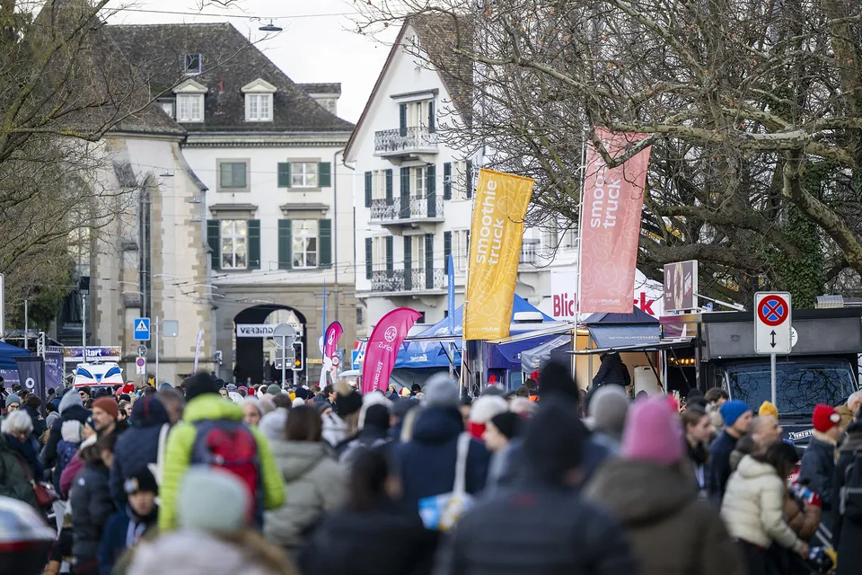

Finish the year strong: the best New Year's Eve races
Zürcher Silvesterlauf 2024, Limmatquai. Photo: Zürcher Silvesterlauf fernblau, Wikimedia Commons, CC BY-SA 4.0
Close out the year on the move – with friends, in fancy dress or chasing one last PB – and then sit down to dinner with a clear conscience. Our list has more than 100 races on 30 and 31 December. Here are the best of them, from Germany and Austria to Switzerland and South Tyrol.
Why New Year's Eve runs are special
A New Year's Eve run is the most laid-back race of the year. Nobody's out to set a record, whole families and running groups turn up together, and some people come in costume. Most courses are short – 5 or 10 kilometres – which makes them perfect for beginners and for anyone who just needs to get out after the holidays. And if you're trying to keep running through the winter, a race on the 31st is a great goal to aim for. Our tips for that are in “Winter running”.
The big city classics
- Berliner Silvesterlauf (Berlin-Charlottenburg): 6.3 and 10.3 km.
- 50. Kölner Silvesterlauf (Cologne): 5 and 10 km – the 50th anniversary edition.
- 48. Spiridon Mainova Silvesterlauf (Frankfurt): 10 km.
- 34. Stuttgarter Silvesterlauf: 5.5 and 11 km.
- 23. Silvesterlauf Nürnberg (Nuremberg): 5 and 10 km.
- Silvesterlauf Bremen: 5 and 10 km.
- 36. Sparkassen Silvesterlauf am Auensee (Leipzig): 10 km.
- 49. Aachener Silvesterlauf: 9 km.
- Trierer Silvesterlauf: 8 km.
See all New Year's Eve runs in the list
Austria, Switzerland and South Tyrol
- Wiener Silvesterlauf (Vienna): 5 km.
- MeinBezirk Silvesterlauf Graz: 5 and 10 km.
- 24. IKB Silvesterlauf Innsbruck: 5 km.
- HYPO Silvesterlauf Linz: 6 km.
- Silvesterlauf Klagenfurt: 5 and 10 km.
- 44. Int. Raiffeisenbank Silvesterlauf Krems: 10 km.
- Silvesterlauf Salzburg: 5 km.
- BoClassic – Silvesterlauf Bozen (Bolzano): 5 km.
- Eschliker Silvesterlauf (Thurgau, a day early on 30 December): 7 and 10 km.
Small, charming and scenic
- Silvesterlauf auf die Burg Teck (Kirchheim unter Teck): 18 km up to the castle.
- Kühlungsborner SilvesterLauf on the Baltic coast, 30 December: 5 and 10 km.
- Binzer Silvesterlauf on the island of Rügen.
- 67. Gummersbacher Silvestercrosslauf: 5 and 10.7 km – for everyone who likes it muddy.
- Silvesterlauf Rund um die Thülsfelder Talsperre (Molbergen): 5, 10 and 16.1 km around the reservoir.
- CROSSDOGs Silvestertrail (Rothenbuch, Spessart hills): 6, 10 and 20 km.
For the long haul
Want to end the year with a really long one? You've got options:
- Silvester-Ultramarathon Breuna (northern Hesse): 22.8 and 45.6 km.
- Erzsteig über Hüggel-Gipfel UltraTrail (Hasbergen near Osnabrück, 30 December): 30.8 and 46 km.
- Neujahrsmarathon Zürich (Schlieren): half marathon and marathon.
- Silvesterlauf Gießen and CVJM Silvesterlauf in Netphen: both with a half marathon.
Can't make the 31st?
Some New Year's Eve runs happen a few days early – handy if your 31st is already booked. The Zürcher Silvesterlauf takes place on 13 December, and on 27 December you can choose between the 52. Internationale Sparverein Silvesterlauf Saarbrücken (10 km), the Altacher Silvesterlauf in Vorarlberg (6.2 and 12.4 km) and the Silvesterlauf Oeversee near Flensburg (5, 9 and 11 km).
Tip: New Year's Eve runs are popular, and some sell out early. Got a favourite? Sign up now. And pack warm, dry clothes for afterwards – once you've crossed the finish line in December, you cool down fast.
How to find your run
- Open the list of all runs on 31 December.
- Enter your home town under “Place & radius” to see straight away what's near you.
- Or check the map to find the run with the best setting.
The bottom line
Big city, Baltic beach or castle hill, 5K or ultra – there's a New Year's Eve run for everyone. Pick one, bring your friends, and start the new year with a smile.
Find your New Year's Eve run
Every run on 31 December in Germany, Austria, Switzerland and South Tyrol – with distances, locations and a link to the organiser.
Dates and distances from our list, as of 4 November 2026. Whether a race is already sold out is shown on the organiser's website.